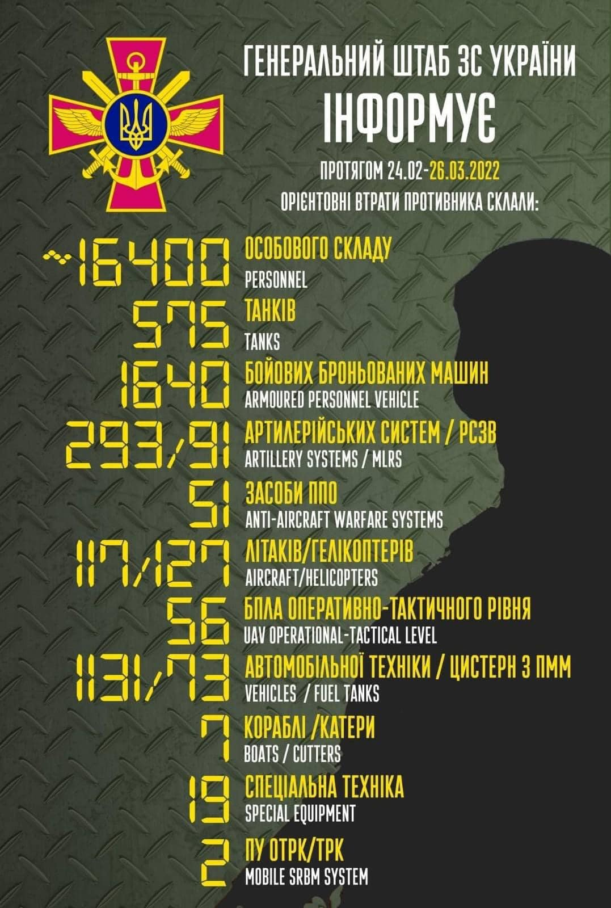
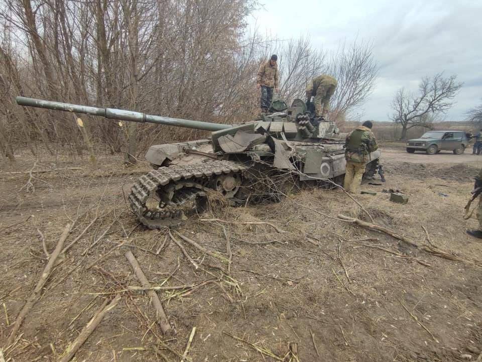
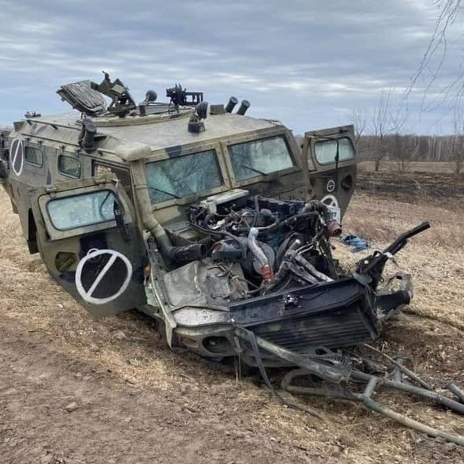
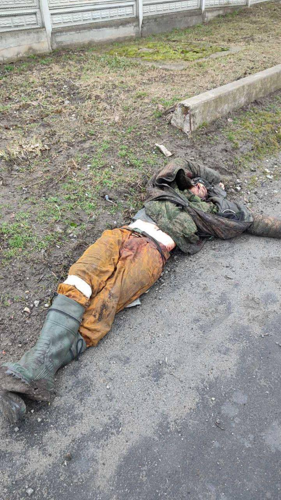
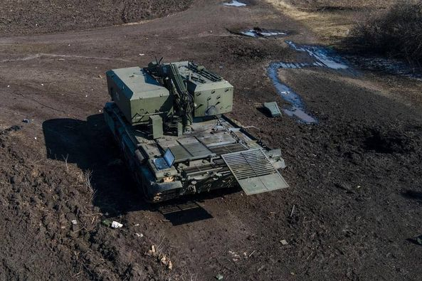

За декілька неділь до початку війни від наших західних союзників почали надходити тривожні сигнали про те, що Росія збирається напасти на Україну. Але в Українському інформаційному просторі повідомлення були заспокійливі.
Перед нападом на Україну, Росія провела декілька навчань спільно з Білорусією своїх військ, стягнула до кордонів України велику кількість своїх військ. Деякі називали кількість у 150 тис. особового складу. Також Росія перекинула свої війська до Білорусії. Стягнула велику кількість військ в тимчасово окупований Крим.
Ми не вірили, що Росія наважиться напасти на Україну. Але 24 лютого 2022 року почалось повномасштабне вторгнення Російських військ в Україну.
Я, Данильченко Євген Васильович, спав у себе в хаті, моя дружина Борисенко Світлана Миколаївна, пішла в 5 годин ранку на роботу, вона в той час працювала на місцевому ринку продавцем. Мене розбудили два сильних вибухи. Я прокинувся. З своєї кімнати вийшов Тарас Юрьєвич Борисенко. І в той же час подзвонила моя дружина та повідомила мене шо чула два вибухи поряд. І що вона вертається до дому. Світлана подзвонила Яні хазяйки своєї точки на базарі і сказала, що вона не виходить на роботу. Через деякий час Світлані подзвонила Янина мати та сказала що нічого страшного не сталося і щоб виходили на базар. Згодом Яна передзвонила Світлані та сказала що таки базар на сьогодні відміняється.
Я дочекався Світлану дома і ми зібравши необхідні речі та документи разом з Тарасом, визвали таксі, та поїхали до моєї матері до дому.
Діло було в Білій Церкві, Київській області.
В перший день війни ми були шоковані нападом Росії на Україну. Але згодом оговтались та почали діяти. Світлана обдзвонила своїх знайомих та взнала що було випущено дві ракети по наших військових частях. Одна влучила в ціль але не завдала великих збитків. Жертв не було, повилітали тільки вікна.
Через деякий час Тарас визвав таксі та поїхав до свого батька до дому в другий район міста.
Дочка Світлани, Анастасія Алексеєвна в цей час знаходилась у своєї бабусі в Тарасівки Сквирського району.
22:49 01.02.2022 р. Двадцять хвилин тому я та Світлана стояли на подвір’ї маминої хати, як побачили на обрії спалахи. Бачили також як зі сторони Левана світило в небі прожектором. Потім прожектор вимкнувся та через деякий час ми побачили спалах дуже сильний через три секунди почувся сильний вибух. Мабудь в 2.5 – 3 ох кілометрах від нас був вибух. Сидимо в укритті. Згодом повідомили що ракета розбомбила базу ГМС.
Ми з Світланою вийшли покурили я зробив чай та знову спустились в укриття.
Моя мама в цю годину знаходиться в своїй кімнаті. 23:34 01.02.2022 р. У 23:49 відбій повітряної тривоги. Піднялись в свою кімнату Трохи подивились Канал «Новий» по телевізору, там транслювали мультфільм. Згодом лягли спати.
10:34 02.03.2022 р. Ніч пройшла спокійно. Піднялись ранком по тривозі у 7:41. Підготували укриття. Потім був відбій у 8:36. Я поснідав, сходив в магазин. Купив цигарки, майонез, сметану. Світлана готує борщ – Українську національну справу. Знову тривога 10:21 сидимо коло укриття. Світлана готує борщ, та дивиться новини по телефону. Вийшла мама, побалакали з нею. Повітряна тривога триває. Почалась у 10:21 зараз 10:45. На разі вибухів не чутно. Наші хлопці відбивають повітряні атаки.
Тільки що прочитав: Новий хіт «Ода українському байрактару»
Російські танкісти сховались в кущі,
Щоб лаптем посьорбати довбані щі,
Та трохи у щах перегрівся навар…
Байрактар!
Піднявся настрій. Придумав Хокку:
Темно, в Україні - ніч.
Буряти підсмажені в танку.
Байрактар.
Передали відбій повітряної тривоги у 11:10.
11:50 02.02.2022 р. Моя жінка Світлана написала повідомлення жінці Саші Данильченко, Світлані, згодом прийшло повідомлення від Світлани Данильченко, жінки Саші Данильченко. У них все добре. Саша цілу ніч охороняв аеродром, Світлана зараз на блокпостах - кормить військових. Дзвонила Яся наша подруга, в них тихо.
10:10 16.03.2022 р. Іде двадцять перший день війни. По Кіївській області оголосили комендантську годину з 15.03.2022 р. по 17.03.2022 р. Виловлюють диверсантів та кадирівців. Тільки що оголосили про повітряну тривогу. ЗСУ боронять Україну від загарбників. На деяких напрямках перейшли до контр атак. Загарбники деморалізовані, здаються в полон, тікають кидаючи техніку. Кадирівці розбиті під Києвом. Розуміючи що не може завойувати Україну військами ворог змінив тактику. Ворог бомбить населенні пункти, та цівільне населення. Вдається до тактики диверсійних груп.
Втрати ворога: Особовий склад 13800 осіб. Танків 430 од. Літаків 84 од. Гелікоптерів 108 од. Бойових броньованих машин більше 1375 од. Артилерійських систем 190 од. РСЗВ 70 од. Засоби ППО 43 од. Автомобільної техніки 819 од. Кораблів/катерів 3 од. Цистерн з ПММ 60 од. Безпілотників 11 од. Спеціальна техніка 10 од.
Загалом знищено близько 40% підрозділів РФ, залучених до так званої «операції» на території України.
Днями раніше я передав в центр оперативного реагування мішки для піску. Також мені подзвонили позвали розвантажувати машини з продуктами. Також ми з моєю жінкою навідувались на квартири, які розташовані в нашому місті та за якими треба доглядати. Ходили в магазини купляли продукти харчування.
09:19 26.03.2022 р. Переїхали на квартиру на клініці. Обустроїлись, вже живем другу неділю. Сьогодні узнав в повідомленні, що пропала дочка мого племінника Саші Данильченко – Діана. З учорашнього дня не виходить на зв’язок. Поліцію повідомили, в соцмережах повідомили. Шукають… На днях були чутні вибухи, це окупанти бомбили Фастів. Сьогодні думаємо сходити на квартиру на ДНС, подивитись, що там та як там. Два дні назад був рівно місяць спротиву України російсько-фашистській навалі. Доходять чутки що під Києвом ЗСУ окружили окупантів. Хоть би вже вигнали рашистів з нашої землі. Ходять чутки, що у Путіна намічається розкол у владі. Десь пропав його міністр Шойгу. Вчора Жириновський таки подох. Слава Богу. Кобзон таки його зустріне на своєму концерті.
7:43 29.03.2022 р. Вчора вийшла на зв’язок Діана. Вона подзвонила своїй матері Світлані та сказала що вона в Германії. Але нам не дуже в це віриться. Як це так вийшла прогулятися та опинилась в Германії? Мабудь її таки вивезли на росію. Ми вчора переїхали на ДНС до дому. Бо стало вже спокійніше. Я шукаю роботу, але пока роботи немає. Трохи бізнес починає працювати, то може щось і буде. ЗСУ контратакують, вже звільнили місто Ірпінь, та декілька сіл на Харьковщині.

Загальні бойові втрати противника з 24.02 по 26.03 орієнтовно склали / 🇬🇧 The total combat losses of the enemy from 24.02 to 26.03 were approximately:
особового складу / personnel - близько/ about 16400 осіб,
танків / tanks ‒ 575 од,
бойових броньованих машин / APV ‒ 1640 од,
артилерійських систем / artillery systems – 293 од,
РСЗВ / MLRS - 91 од,
засоби ППО / Anti-aircraft warfare systems - 51 од,
літаків / aircraft – 117 од,
гелікоптерів / helicopters – 127 од,
автомобільної техніки / vehicles - 1131 од,
кораблі /катери / boats / cutters - 7 од,
цистерн з ПММ / fuel tanks - 73,
БПЛА оперативно-тактичного рівня / UAV operational-tactical level - 56.
Спеціальна техніка / special equipment - 19.
Пускові установки ОТРК/ТРК / mobile SRBM system - 2.
Дані уточнюються. Підрахунок ускладнюється високою інтенсивністю бойових дій. / Data are being updated. The calculation is complicated by the high intensity of hostilities.
Бий окупанта! Разом переможемо!
Strike the occupier! Let's win together!
Ці данні я взяв з соцмережі на офіційній сторінці Генерального Штабу ЗС України.
12:25 30.03.2022 р.
Вчора в Туреччині проводились перемовини між Українською делегацією та Російською. Умови що кажуть ні вашим ні нашим. Але Російський президент подасть цю подію як перемогу Росії, хоча нам усім зрозуміло, що Росія програє вже в цій війні.
Вчора ж повідомили що ЗСУ відкинули росіян від Чернігова. Тако ж ЗСУ звільнили дорогу на Харків, та взяли під свій контроль дорогу з Києва на Житомир. Але Росіяне бомбили вночі м. Чернігів. Ворог завдає артилерійські та ракетні удари по мирних жителях, мирних містах України.
Західні країни ввели санкції проти Росії, та допомагають Українцям оборонною зброєю, та присилають нам гуманітарну допомогу.
На Росії ціни по всім позиціям піднялись в два-три рази, крім горілки, бо путлеру потрібна тупа пьяна маса рабів. Через то на горілку ціни не змінилися.
Російські війська несуть дуже великі втрати. Ось деякі фотографії з різних міст України розбитої техніки ворога. Також додаю фотографії вбитих солдат ворога.



Оперативне оновлення щодо #російського_нашегнення на 12.00 30 березня 2022 року.
Тридцять п'ятий день героїчного спротиву українського народу російському військовому вторгненню триває. Сили оборони України продовжують проводити оборонну операцію на Східному, Південно-Східному та Північно-Східному напрямках. Російський ворог продовжує вести повномасштабну збройну агресію проти України. Воно зазнало значних втрат і, ймовірно, тимчасово відмовилося від завдання блокувати Київ. Перегрупується та зосереджується на наступальних операціях у Східній операційній зоні та нарощує систему логістичного та логістичного забезпечення військ у Донецькій та Таврійській районах. Військове командування російського ворога продовжує відправляти військовослужбовців з підрозділів військової підтримки, у тому числі навчальних закладів, через необхідність рекрубувати підрозділи Збройних Сил РФ, причетні до війни проти України та понесли значні втрати.
Персонал російського ворога деморалізований та має низьку мотивацію брати участь у бойових діях на території України. Таким чином, за наявною інформацією, спроби російського військового командування мобілізувати "добровольців" не мають підтримки населення. Зокрема, у Калінінградській області набрали лише 17 так званих «добровольців».
На волинському напрямку руху тактичних підрозділів противника та змін у їх складі не зафіксовано. У Збройних Силах Республіки Білорусь тривають заходи оперативно-бойової підготовки.
На Полісському напрямку відзначають рух ворожих військ уздовж державного кордону України з Республікою Білорусь. Одночасно окупаційні війська продовжують акумулюва ти в районі Чорнобильської АЕС, споруди Притулку та Зони відчуження в цілому. Таким чином, зафіксовано рух змішаних колон російських ворожих автомобілів з населеного пункту Іванків у напрямку Чорнобильської АЕС.
У Сіверському ворог зосередив свої зусилля на диверсійно-розвідувальну діяльність, інженерну техніку позицій та артилерійські удари по позиціях підрозділів ЗСУ та об'єктах інфраструктури поблизу міста Че Чернігівська.
На Броварському напрямку відбувся частковий виведення підрозділів з району окупованої руськими окупантами в напрямку кордону з РФ.
На Слобожанському напрямку русанські окупанти продовжують блокувати місто Харків та наносять артилерійські удари по житлових районах міста.
На Ізюмському напрямку ворог нарощує зусилля, переміщаючи окремі підрозділи 20-ї ВС та 1-ї танкової армії з інших напрямків. Продовжує наносити ракетні та бомбові удари та вогневу артилерію.
На Донецькому напрямку російський ворог посилив вогневі та штурмові дії, продовжує наносити повітряні та ракетні удари по населеним Основні зусилля зосереджені на тому, щоб взяти під контроль міста Попасна, Рубіжне та Маріуполь.
У районі Південного Буху ворог намагається вжити заходів для відновлення боєздатності своїх військ, поповнити боєприпаси та пальне та масти, продовжує інженерну техніку окупованих кордонів. Він намагається стримувати дії підрозділів ЗСУ артилерійськими вогнем та повітряними ударами.
Вчора в російському місті Белгород через нехтування правилами безпеки та порушення вимог перевезення боєприпасів відбулась їх несанкціонована детонація. Ця ситуація - приклад типового масового використання російськими військовослужбовцями застарілих небезпечних боєприпасів, у тому числі під час Другої світової війни. Лише вчора Генштаб ЗСУ попередив про загрозу самодетонації Н боєприпасів, величезну кількість яких встановила Росія в районі Чорнобильської АЕС.

Українські воїни знищили хвалений «Сонцепьок» окупантів
На Харківщині військові ЗСУ розвернули колону окупантів та залишили їхню зруйновану техніку у полях, повідомили у Міноборони.
«Колона йшла на село на Харківщині і отримала відсіч. Окупанти почали розбігатися, ТЗМку від «Сонцепьока» розвернули, щоб вертатися на ній у бік російського кордону. Але в тилу їх вже чекали ми», – розповів історію знищеного зразка один з воїнів.
«Сонцепьок» –російська важка вогнеметна система залпового вогню, яку нахвалювали росіяни і навіть знімали однойменний пропагандистський фільм. Тепер це груда металу, яка ржавіє у наших полях.